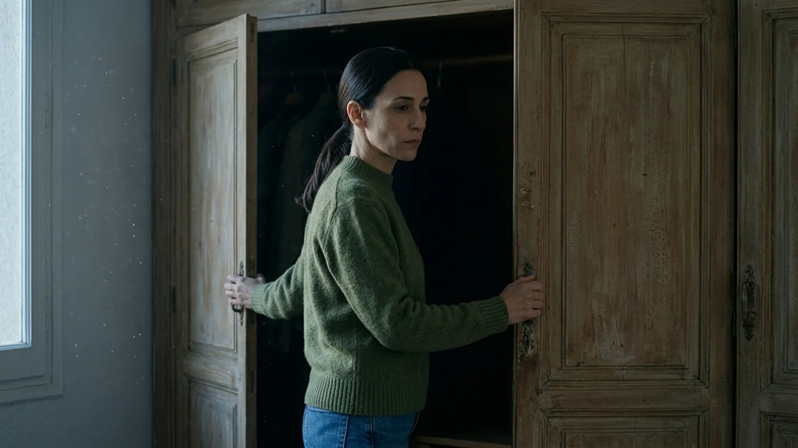
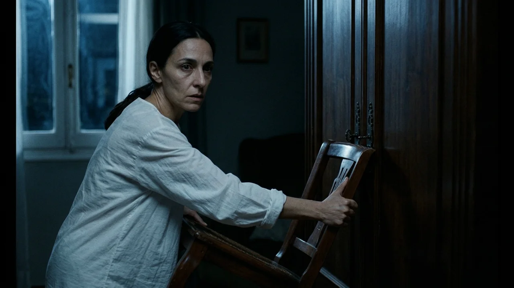
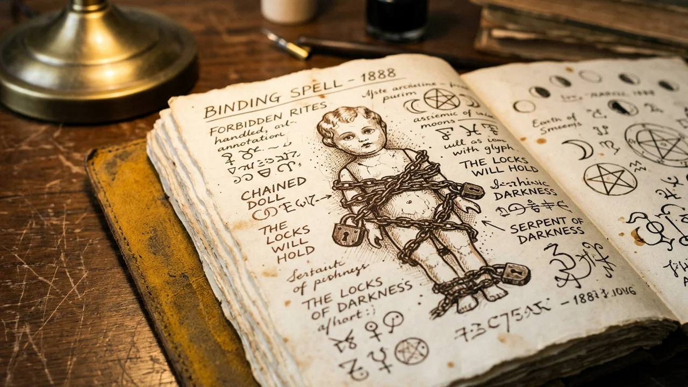
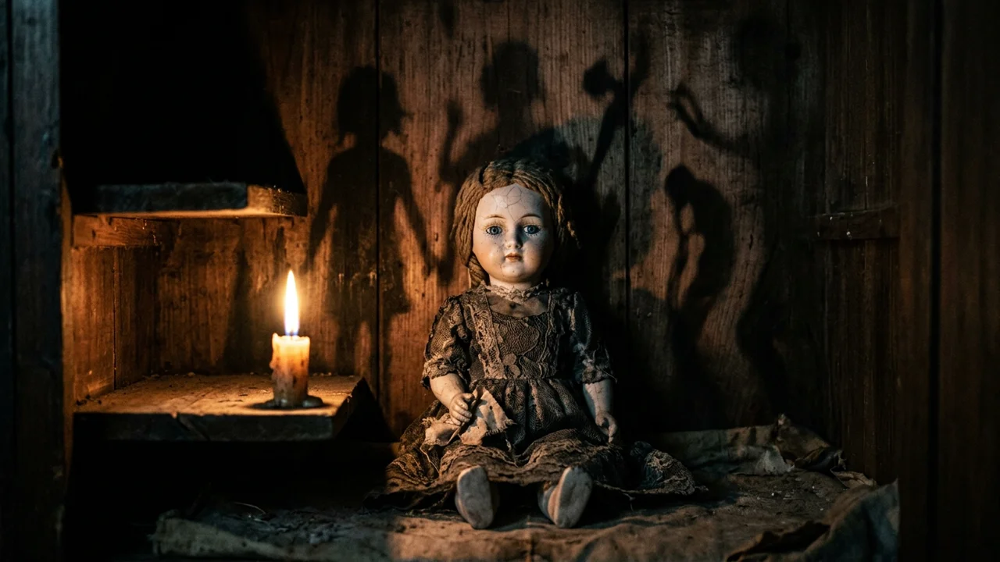
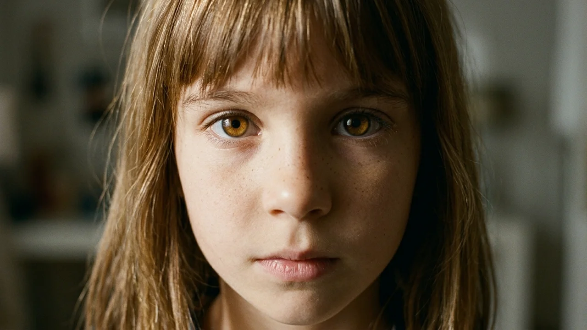

El olor a cal muerta y a madera vieja impregnaba los zócalos de la casa. Elena arrastró la última caja de cartón por el suelo de tarima del dormitorio infantil, secándose el sudor de la frente. A través de la ventana, la tarde de otoño se apagaba sobre los encinares de la sierra con una tonalidad parda y fría. En la planta baja sonaban los golpes de martillo de Marcos, ajustando las cañerías del fregadero.
Elena abrió las puertas batientes del armario empotrado. En la esquina inferior, oculta tras una pila de periódicos amarillentos, la tabla trasera sonaba a hueco. Tanteó con los dedos hasta dar con una pequeña hendidura en la madera y tiró hacia fuera.
La tabla cedió con un crujido seco. En el fondo del nicho, apoyada contra la piedra desnuda, descansaba una muñeca de porcelana de unos cuarenta centímetros.
Elena acercó la linterna del teléfono. La figura vestía un traje victoriano de encaje sucio y tenía una melena rubia apelmazada por el polvo. Su rostro vidriado mostraba mejillas sonrosadas y una sonrisa helada. Pero lo que erizó la piel de Elena fueron las cadenas: tres vueltas de eslabones oxidados le rodeaban el torso y aprisionaban el cuello contra la espalda con dos pequeños candados de latón. Debajo de los zapatitos de badana podrida había una cartulina doblada con una caligrafía temblorosa:
*«No abrir jamás tras la medianoche. Si te mira, no pestañees. Lo que sueña ella, lo harás tú»*.
—Vaya ocurrencia —murmuró Elena con una mueca de incredulidad.
—¡Mamá! ¿Qué tienes ahí?
Lucía apareció en el umbral del cuarto con su conejo de trapo en brazos. Al divisar el hueco oscuro del armario, se detuvo en seco. Su mirada se clavó en la muñeca con una fijeza insólita.
—Es un trasto viejo que dejaron los anteriores dueños, cariño —dijo Elena, interponiéndose para encajar la tabla—. Vamos abajo. Papá ha comprado bizcocho.
—Tiene frío —susurró Lucía sin pestañear—. Dice que las cadenas le aprietan mucho el cuello.
Elena sintió una punzada helada en el estómago. La niña no bromeaba; sus ojos estaban fijos y su respiración sonaba extrañamente lenta.
Aquella noche, antes de acostarse, Elena comprobó que el cerrojo del armario estuviera bien echado. La falleba de hierro bajó hasta el tope con un golpe firme.
A las tres y cuarto de la madrugada, un chasquido metálico despertó a Elena.
Se incorporó en la cama, atenta a las sombras. A su lado, Marcos dormía profundamente. Elena apartó el edredón y salió descalza al pasillo. La puerta del cuarto de su hija estaba entornada.
Elena empujó la madera despacio. El armario empotrado tenía las dos hojas abiertas de par en par. La falleba colgaba suelta y la tabla del fondo yacía en el piso. Sentada en mitad de la alfombra, a un palmo de los pies de la cama de la niña, estaba la muñeca encadenada. Sus ojos de cristal azul brillaban en la penumbra con un destello líquido.

Lucía dormía de costado, pero sus labios se movían sin emitir sonido, como respondiendo a una voz lejana.
Elena sintió un vuelco en el pecho. Cogió el juguete con repugnancia. La porcelana estaba fría como el hielo de un pozo y las cadenas de hierro parecían haber perdido tensión alrededor del cuello. La devolvió al nicho, encajó la tabla con fuerza y trancó las puertas batientes con una pesada silla de castaño bajo el picaporte.
Durante el desayuno, Elena encaró a la niña con fingida serenidad.
—Lucía, anoche te levantaste a jugar con la muñeca del armario, ¿verdad? No debes mover trastos viejos a oscuras.
La pequeña levantó la vista con expresión inocente.
—Yo no fui, mami. Fue ella. Quería ver mis zapatillas. Me dijo que su mamá también le ponía ropa limpia antes de que la encerraran.
Marcos sonrió desde el otro lado de la mesa mientras apuraba su café.
—Tiene demasiada imaginación, Elena. Se habrá despertado sonámbula por el cambio de casa.
—La puerta estaba atrancada por fuera, Marcos —replicó Elena con firmeza—. Y la muñeca estaba encerrada con cerrojo.
Marcos suspiró y le apretó la mano con afecto.
—Esta tarde le pongo un cerrojo nuevo si te quedas más tranquila. No te obsesiones, estás agotada por las guardias.
Tres noches después, la inquietud se transformó en espanto.
Elena despertó por un roce metálico arrastrado sobre la tarima. Se levantó de golpe y corrió hacia el descansillo de la escalera.
Al borde del primer peldaño estaba Lucía. Tenía los ojos desorbitados, fijos en el vacío, y en su mano derecha empuñaba el cuchillo de trinchar de la cocina. La hoja de acero brillaba con un filo gélido bajo la luna.
—Lucía... —susurró Elena, clavando los pies en el suelo—. Cariño, suelta eso, por favor.

La niña giró la cabeza muy despacio. Su voz sonó áspera, profunda, ajena a su edad:
—Papá tiene gusanos negros en el pecho. Se lo comen por dentro. Tengo que abrirle la carne para que respire. Ella me lo ha enseñado.
Elena se abalanzó sobre su muñeca con precisión médica, presionando el tendón hasta que los dedos pequeños soltaron el cuchillo. En cuanto el metal golpeó la madera, Lucía se desplomó en sus brazos, temblando y rompiendo a llorar con el llanto desvalido de una niña asustada.
—Mami... me duele la cabeza... la señora rubia no para de gritarme...
Elena la apretó contra su pecho con el corazón desbocado. Al alzar la vista por el pasillo, vio la silla del armario volcada y, en el quicio del dormitorio infantil, la muñeca de porcelana sentada en el suelo, observándolas con su sonrisa inmóvil.
A la mañana siguiente, Elena dejó a Lucía con Marcos bajo orden estricta de no dejarla sola y condujo hasta el archivo municipal del pueblo.
El archivero tardó más de una hora en encontrar el expediente judicial de mil novecientos sesenta y cuatro sobre la casa de Los Manantiales. Cuando Elena abrió la carpeta, las fotografías amarillentas le encogieron el alma.
El informe pertenecía a Adelaida Carvajal, una mujer internada tras asfixiar a sus dos hijos pequeños en sus camas. En sus declaraciones, Adelaida repetía sin cesar que una muñeca de porcelana le hablaba en sueños, convenciéndola de que los niños estaban poseídos y que asfixiarlos era el único modo piadoso de salvar sus almas. El psiquiatra forense anotó que la madre no mostraba odio, sino un amor desesperado y corrompido: el juguete no dominaba el cuerpo mediante la fuerza, sino que se infiltraba en el sueño profundo, distorsionaba los afectos y transformaba el instinto de protección en un arma asesina.
La mujer había encadenado la figura con hierro para sofocar su radio de influencia, pero advertía que el ente buscaba siempre la permeabilidad de las mentes infantiles.
Elena cerró los legajos con manos temblorosas. Comprendió el horror con claridad clínica: no era una posesión; era un parásito psíquico que utilizaba el amor filial para empujar al sacrificio.
Al regresar a la casa, Elena subió directa al cuarto de su hija, agarró la muñeca por el cuello y bajó al patio trasero. La arrojó sobre la mesa de granito y empuñó la maza de hierro de Marcos.
—Se acabó —dijo con rabia—. Te vas a convertir en polvo.
Alzó el hierro con ambas manos dispuesta a reventar la cabeza esmaltada.
—¡Elena, para! —el grito desgarrador de Marcos resonó desde la galería.

Marcos sostenía a Lucía en brazos. La niña estaba arqueada hacia atrás en una convulsión violenta; por su nariz manaba un hilo de sangre y sus ojos estaban en blanco. De su garganta brotaba una voz gutural y cavernosa:
—Si... me... rompes... la... niña... se... apaga... Somos... la... misma... carne...
Elena bajó la maza de golpe, aterrada. En cuanto el hierro tocó la hierba, la niña dejó de convulsionar y cayó desmayada contra el pecho de su padre, respirando con una bocanada limpia.
—No podemos romperla —dijo Elena, cayendo de rodillas con lágrimas en los ojos—. Si destruimos la porcelana, le reventamos el cerebro a la niña.
Marcos se arrodilló junto a ella, sujetando a su hija.
—¿Qué hacemos entonces?
Elena recordó las notas del expediente:
—Hay un ritual de sellado en los diarios de Adelaida. Hay que contenerla en su nicho original a medianoche exacta, cerrando desde fuera mientras alguien dentro mantiene la mirada fija en sus ojos sin pestañear y pronuncia su nombre verdadero. Si dudas un solo instante, te hace creer que estás encerrando a tu propia hija.
Marcos miró el rostro pálido de Lucía y apretó los dientes.
—Tengo pernos de acero y pletinas en la furgoneta. Yo preparo los cierres por fuera. Tú quédate dentro.
La medianoche cayó sobre la casa con un frío glacial.
En el dormitorio infantil, la temperatura congelaba el aliento en vaho blanco. Lucía dormía sedada en la otra punta de la vivienda, custodiada por una cruz de hierro y la puerta cerrada con llave.
Elena estaba sola frente al armario abierto.
En la balda del nicho, los eslabones oxidados comenzaron a aflojarse con un tintineo sordo, cayendo sobre la madera como serpientes muertas. El aire olía a ozono y alcanfor.
—Lista, Marcos —dijo Elena, clavando los ojos en el juguete.

—Pletinas colocadas —respondió Marcos desde el pasillo, con la voz rota por la tensión—. En cuanto des la orden, cierro las hojas y paso los tres pernos.
Elena avanzó un paso. Mantuvo la mirada fija en los ojos de cristal azul. Sentía una quemazón insoportable en los párpados, pero se negó a pestañear.
De pronto, la porcelana del rostro de la muñeca comenzó a ablandarse como cera tibia. Las grietas desaparecieron, los rizos rubios se volvieron castaños con flequillo desordenado y las facciones cambiaron con una precisión atroz.
Frente a Elena ya no había un juguete.
Era Lucía. Su hija, atada dentro del nicho oscuro, llorando con lágrimas auténticas y suplicando con su vocecita inocente:
—¡Mami! ¡Por favor, sácame de aquí! ¡Papá nos quiere matar a las dos! ¡No me encierres en la oscuridad, mami!
El instinto maternal sacudió las entrañas de Elena con violencia salvaje. Sus manos se adelantaron para sacarla, para abrazarla, para librarla del frío. La duda le desgarró el pecho: *¿Y si me he equivocado? ¿Y si es mi niña?*
Sus pestañas temblaron, a punto de ceder.
Pero entonces vio el reflejo en la pupila: no era una lágrima humana, sino condensación rígida sobre cristal inerte. La pupila no reaccionaba a la vela.
Elena apretó los dientes y gritó con toda la fuerza de sus pulmones el nombre que figuraba en la partida de bautismo del legajo:
—¡Marta! ¡Te llamas Marta y tu tiempo ha terminado! ¡Ahora, Marcos!
Elena saltó hacia atrás. Marcos cerró las dos hojas del armario de un golpe seco. Bajó los tres pernos de acero y martilleó los pasadores hasta hundirlos en la jamba de piedra.
Desde el interior del mueble brotó un chillido agudo, metálico e inhumano, que sacudió los tabiques y apagó las velas de un soplo. La madera crujió hacia fuera bajo una presión descomunal durante tres segundos eternos, hasta que el silencio volvió a desplomarse sobre la habitación.
Elena cayó de rodillas, jadeando.
Unos pasos menudos sonaron en el pasillo. Lucía apareció en el umbral, frotándose los ojos con el puño de su pijama.
—Mami... ¿por qué hay tanto ruido? Tengo sed.

Elena corrió hacia ella, la alzó en brazos y la apretó contra su pecho, sintiendo su piel tibia y su respiración limpia.
Aquella misma madrugada, con cuatro maletas en el maletero, la familia Ramos abandonó la casa de la sierra sin mirar atrás.
Cuatro meses después, la primavera iluminaba el salón de un piso alquilado en el centro de Madrid.
Elena preparaba la cena mientras escuchaba la radio. Marcos trabajaba en un taller de ebanistería y Lucía había recuperado el color y la alegría. La pesadilla parecía un mal recuerdo sepultado para siempre.
El teléfono de Elena sonó sobre la encimera. Era el colegio.
—¿Elena Ramos? —la tutora hablaba con un tono vacilante—. Mire, Lucía está bien, pero quería comentarle algo. En plástica insiste en hacer siempre el mismo dibujo: una caja oscura con una mujer rubia encadenada del cuello.
Elena sintió que el corazón se le detenía.
—¿Y qué dice la niña? —preguntó con un hilo de voz.
—Dice que la mujer de la caja la visita todas las noches cuando ustedes se duermen. Se sienta a los pies de su cama y le habla al oído.
Elena soltó el teléfono. Caminó despacio por el pasillo hacia el cuarto de su hija.
Lucía estaba sentada en mitad de la alfombra, con las manos entrelazadas sobre el regazo y la mirada clavada en la pared blanca. Inmóvil como una estatuilla.
—¿Lucía? —susurró Elena, temblando—. Cariño, ¿con quién hablas por las noches?
La niña no se sobresaltó ni giró la cabeza. Pero las comisuras de sus labios se curvaron despacio en una sonrisa gélida y perfecta, idéntica al barniz de porcelana que creían haber dejado atrás.
Y cuando habló, su voz no pertenecía a una niña de siete años, sino a un susurro antiguo y sereno:
—Mamá, ya no necesito que abras la puerta. Ahora sé cómo salir.